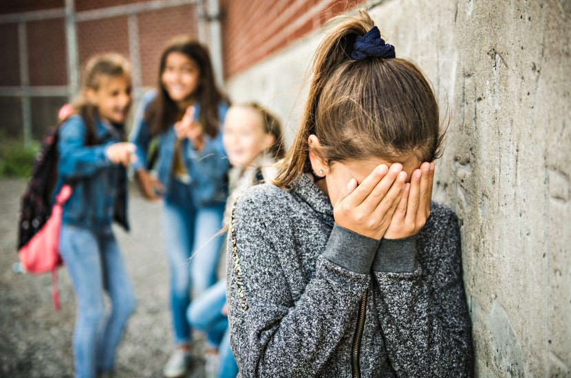
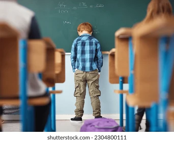

Los problemas comunes en el ámbito escolar en México abarcan desafíos sistémicos y problemas de comportamiento individual, que incluyen la baja calidad educativa, la inequidad en el acceso a recursos, el abandono escolar y el acoso escolar.
Acoso Escolar (Bullying): El bullying es un problema común que afecta el bienestar emocional y el rendimiento académico de los estudiantes.
Falta de Motivación y Absentismo: La desmotivación de los estudiantes y el absentismo escolar son problemas frecuentes, a menudo ligados a métodos de enseñanza poco atractivos o a problemas subyacentes en el hogar.
Problemas de Conducta: Comportamientos agresivos, desobediencia y falta de respeto son problemas que pueden derivar de diversos factores, incluyendo entornos familiares disfuncionales o falta de disciplina.
Consumo de Sustancias: El uso de alcohol, tabaco y otras drogas entre los adolescentes es un problema de salud pública y escolar.
Problemas de Aprendizaje: Dificultades como la dislexia, el TDAH, la disgrafía y otras, si no se identifican a tiempo, pueden llevar al fracaso escolar.
 